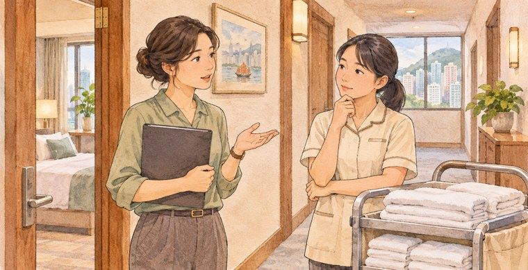

HSP-22 · 香港 · 15分鐘 · 住宿晚數 · 房務工作量 · 服務處理能力
入住晚數相同，清潔工作量也相同嗎？

營運背景
酒店營運系統可區分續住房清潔和退房後清潔，不必假定每間房所需的工時相同。一項已發表、以西班牙一間酒店為對象的研究亦發現，清潔所需時間因客房和清潔類別而異。這些觀察是本練習的出發點，並不代表有通用的清潔房數指標，也不能用來確定下文所列的工時。
營運商、預訂方案、服務所需時間和成本均屬虛構。必須達到的服務質素和安全工作安排維持不變，不得削減。
課堂決定
你在香港管理12間規格相同的服務式住宅。第1天住客抵達前，所有單位均已清潔，並且空置。兩個預訂方案只能擇一，每個方案都會在第1–6晚住滿全部12間單位。兩個方案均未獲接納，現有住客不受影響。為便於課堂比較，假定款項必定收妥、住客必定抵達，沒有取消預訂、空置或額外銷售。
S，短住： 三批住客先後入住，每批均預訂全部12間單位，住兩晚。他們分別在第1、3及5天抵達，在第3、5及7天退房。 L，長住： 一批住客預訂全部12間單位，住六晚，在第1天抵達，第7天退房。兩個方案的已入住房晚均為72個客房晚數。
扣除所有其他有差異的成本、但未計額外房務人手開支前，S比L多帶來900港元。兩個方案的現有房務撥款相同：第2–7天每天早上有三小時可用於清潔工作，第7天另有六小時可用。這是團隊扣除休息和其他職務後的可用工時，並非個別員工的更份長度。工時不可調撥至其他日子。
每個有住客入住的晚上過後，翌晨須提供一次例行續住房清潔；如當天早上退房，則改為一次完整的退房後清潔。即使只比較六個入住晚數，仍須計入第7天最後一次清潔。入住前毋須額外清潔。服務質素、用品、同意及安全安排均維持不變。今天你可以先核實主管估算的工時，並預約合資格的額外人手，再決定接納哪個方案。
初步比較：住滿所有單位的兩個方案| 比較項目 | S：短住 | L：長住 |
|---|
| 單位數目 | 12 | 12 |
| 已入住客房晚數 | 72 | 72 |
| 抵達日 | 第1、3及5天 | 第1天 |
| 退房日 | 第3、5及7天 | 第7天 |
| 未扣額外房務開支的收入 | 比L多900港元 | 比較基準 |
| 已有撥款的可用工時 | 第2–7天每天早上3小時；第7天另加6小時 | 與S相同 |
你的決定你會暫時傾向S還是L？請說明為甚麼單憑已入住客房晚數不足以確認房務安排，並指出還欠哪些工作量資料。
第二輪 · 多了一項資料
主管估計，這些單位每次續住房清潔需時15分鐘，每次退房後清潔需時45分鐘。這些時間只是本個案假設的規劃用時，並非行業基準、員工定額，也不是要求員工加快完成工作的指示。休息、往返、備置用品及其他職務均已另行預留時間，不佔上述可用工時。
每個有需要的早上都可安排合資格的額外人手，每增加一小時可用工時，收費為100港元，已包括所有費用，沒有最低預約時數或其他收費。人手必須現在預約；主管確認，增配人手後，團隊可在議定的進房和客房周轉時段內完成服務。不得加班、匆忙作業、略過清潔或削減現有權益。若實際情況需要更多時間，經理必須以安全方式增配人手，而非硬性要求按估算時間完成。
第3及5天早上，S方案的12間單位全部退房，L方案則全部續住。第7天早上，無論採用哪個方案，12間單位均會退房。其餘提供服務的早上均安排續住房清潔。900港元的收入優勢及其他所有假設均維持不變。
你的決定你現在會接納哪個方案？請列出每天須增配的人手工時及相關成本，再指出短住方案至少須多帶來多少收入，才可令兩個方案的財務結果相同。
一個客房晚數不等於一次清潔
每次住兩晚，須做一次續住房清潔和一次退房後清潔。S共有36次住宿，因此兩類清潔各有36次。每次住六晚，須做五次續住房清潔和一次退房後清潔。L共有12次住宿，因此有60次續住房清潔及12次退房後清潔。兩個方案都要提供72次服務，但工作組合不同。
S需要的工時為（36 × 15 + 36 × 45）÷ 60 = 36小時。L需要（60 × 15 + 12 × 45）÷ 60 = 24小時。S多出的24次退房後清潔，取代了24次續住房清潔，並不是在續住房清潔次數不變的情況下再加上去。
先算服務次數，再算撥款未涵蓋的工時| 比較項目 | S：短住 | L：長住 |
|---|
| 續住房清潔次數 | 36 | 60 |
| 退房後清潔次數（包括第7天） | 36 | 12 |
| 所需可用工時總數 | 36 | 24 |
| 超出撥款所涵蓋的工時 | 第3天6小時；第5天6小時 | 沒有 |
| 額外人手成本 | HK$1,200 | HK$0 |
按日編排早上的工時
十二間單位的續住房清潔需要三小時；十二間單位的退房後清潔則需要九小時。L可用第2–6天每天的三小時，以及第7天已有撥款的九小時完成。S在第3及5天也各需九小時，兩天均欠六小時，合共須另購12小時可用工時。其他日子即使有剩餘工時，也不能在住客退房前先做退房後清潔。
兩個方案都須計入第7天的退房後清潔。漏算會低估兩者的工作量；若當天早上再加一次續住房清潔，則會重複計算。
計入工作量後再比較收益
未計額外人手成本前，S多帶來900港元，但服務成本多出12 × 100港元 = 1,200港元。其收入優勢變為900港元 − 1,200港元 = −300港元。按題設目標，扣除這些成本後的淨收入越高越好，因此應選L。這只是兩個方案的差額，並非物業整體利潤。
短住方案多帶來1,200港元收入，兩個方案的財務結果便相同。高於這個金額，S的淨收入較高，前提是已預約所需的額外人手，而且仍符合所有保障要求。個案並無提供回頭客生意、顧客滿意度或策略上的好處，足以抵銷目前300港元的差額；不要虛構這類好處，當作量度所得的結果。
改善預訂與房務的交接
向房務團隊按日提供抵達、退房和續住資料，不要只報入住率。與團隊確認各項工作的預留時間、服務承諾、合資格人手及客房實況。長住並不一定較好：價格、服務和時間安排都可以不同。本個案要說明的是不同預訂組合如何帶來不同的工作量，而不是一概拒絕短住。
教師說明
用3分鐘作初步選擇，5分鐘畫出第2–7天的早上服務安排，再用5–7分鐘揭示新資料及比較財務結果。請學生為每個方案的每個早上標上D或S。正確次序為S-D-S-D-S-D及S-S-S-S-S-D。區分客房晚數、住宿次數、服務次數、可用工時及付費人手安排。不要把虛構的分鐘數變成員工績效指標。
有理據的初步答案可以暫時看重多出的900港元，但在核實工作量前不作承諾。第二輪資料只是在題設財務條件下支持選擇L，並非對短住客人作道德評價。每個答案都必須保留最後的退房後清潔、維持服務質素，並保障員工休息和恢復體力的時間。這不代表已獲任何法律或職業健康合規認證。
第二輪
主管估計，這些單位每次續住房清潔需時15分鐘，每次退房後清潔需時45分鐘。這些時間只是本個案假設的規劃用時，並非行業基準、員工定額，也不是要求員工加快完成工作的指示。休息、往返、備置用品及其他職務均已另行預留時間，不佔上述可用工時。
每個有需要的早上都可安排合資格的額外人手，每增加一小時可用工時，收費為100港元，已包括所有費用，沒有最低預約時數或其他收費。人手必須現在預約；主管確認，增配人手後，團隊可在議定的進房和客房周轉時段內完成服務。不得加班、匆忙作業、略過清潔或削減現有權益。若實際情況需要更多時間，經理必須以安全方式增配人手，而非硬性要求按估算時間完成。
第3及5天早上，S方案的12間單位全部退房，L方案則全部續住。第7天早上，無論採用哪個方案，12間單位均會退房。其餘提供服務的早上均安排續住房清潔。900港元的收入優勢及其他所有假設均維持不變。
你的決定你現在會接納哪個方案？請列出每天須增配的人手工時及相關成本，再指出短住方案至少須多帶來多少收入，才可令兩個方案的財務結果相同。